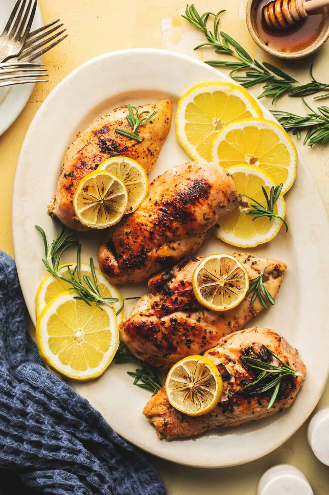

Lemon Chicken

Description
This healthy baked lemon chicken always turns out well, from the first recipe test to the last time I
made it (last night!)! It is juicy, tender, and savory with just the slightest hint of sweetness.
Plus, it’s super simple to make. Serve it with pan-roasted garlic asparagus and some air fryer
potatoes for an easy, well-rounded meal.
Ingredients
- boneless skinless chicken breasts
- 3 tablespoons butter
- ⅓ cup chicken broth
- 4 tablespoons fresh lemon juice
- 1 tablespoon honey
- 2 teaspoons minced garlic
- 1 teaspoon Italian seasoning
- salt and pepper to taste , (I used 1 teaspoon salt and ¼ teaspoon pepper)
- optional: fresh rosemary and lemon slices for garnish
Instructions
- Preheat oven to 400 degrees and grease a baking sheet or large casserole dish.
- Melt butter in a large skillet over medium-high heat. Add chicken and cook chicken 2-3
minutes on each side just until browned. Transfer chicken to prepared baking sheet.
- In a small bowl whisk together chicken broth, lemon juice, honey, garlic, Italian seasoning,
and salt and pepper.
- Pour sauce over chicken. Bake 20-30 minutes (closer to 20 for smaller chicken breasts, closer
to 30 for larger) until chicken is cooked through. Every 5-10 minutes spoon the sauce from the
pan over the chicken.
- Garnish with fresh rosemary and lemon slices if desired and serve.
Notes
For the Chicken: this recipe also works well with chicken thighs. I recommend medium size, boneless.
If you are using skin-on, be sure to brown them in a skillet over medium-high heat first, 1-2 minutes
on each side.